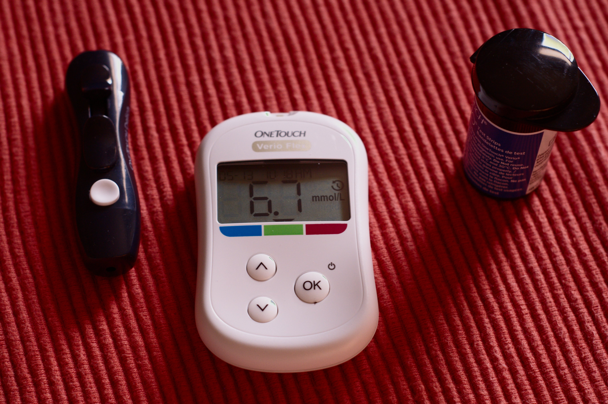

- Definition
- Causes & Symptoms
- Patho
- Prevent
- Treatment
Definition
Diabetes mellitus (DM) is a chronic multisystem disease related to abnormal insulin production, impaired insulin utilization,or both
Diabetes mellitus is a serious health problem
throughout the world, and its prevalence is rapidly increasing.
Currently in the United States an estimated 25.8 million
people, or 8.3% of the population, have diabetes mellitus, and
79 million more people have prediabetes.

Approximately 7 million people with diabetes mellitus have not been diagnosed
and are unaware that they have the disease.
Diabetes mellitus is the seventh leading cause of death in the United States, but
it is likely to be underreported.
The annual cost of diabetes exceeds $174 billion, with $116 billion in direct medical costs.